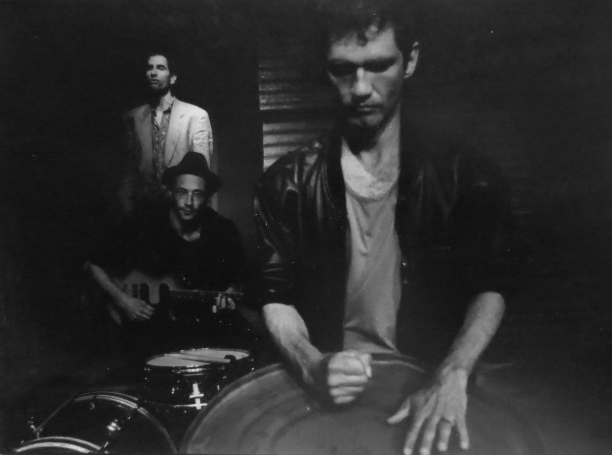
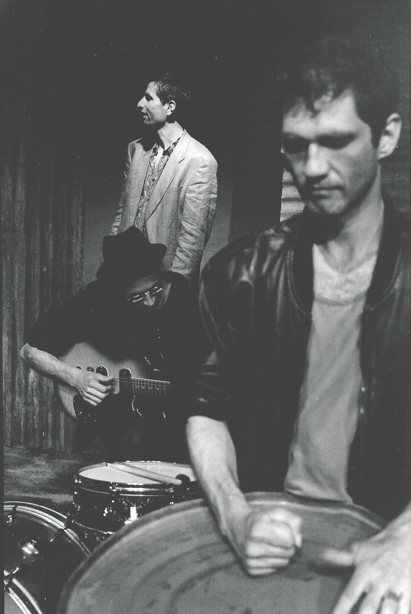
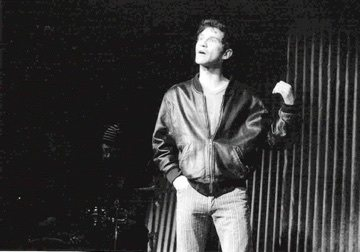
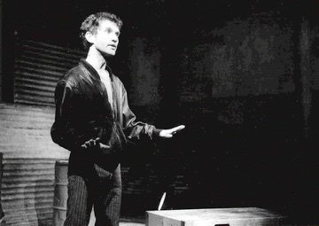
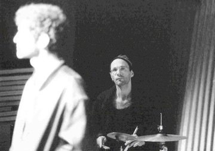
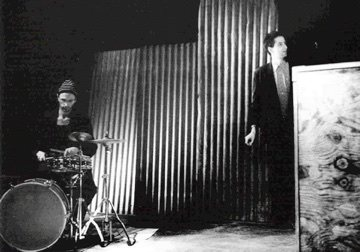
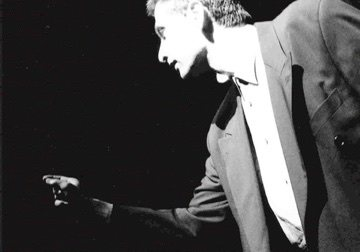

Das mehrfach preisgekrönte Stück des jungen irischen Dramatikers Mark O’Rowe erzählt in zwei dichten, vielschichtigen Monologen vom Leben zweier Jugendlicher in den Dubliner Vorstädten. Nichts ist los – ausser dem, was sie selber losmachen, lostreten, losschlagen. Da reden zwei um ihr Leben, wie andere um ihr Leben rennen.
Howie definiert sich über Gewalt, Rookie über seinen Frauenverschleiss. Die beiden Monologe ergänzen, variieren und widersprechen sich: Trostloses Elternhaus, familiäre Isolation – wie gehen Jugendliche mit Hoffnungslosigkeit um? Situationskomisch werden Clique, Hetzjagd, Prügeleien und Balztänze dargestellt; hinter der Fassade der Typen kommen Leichtsinn und Unreife zum Vorschein. So wird die Geschichte aus den Dubliner Vorstädten zur Metapher für ein Lebensgefühl Jugendlicher in den Vorstädten europäischer Städte.
«Schauspieler und Musiker lassen im kargen Bühnenbild Rhythmen und Melodien entstehen, die dem Publikum geladene Aggression wie beinahe lyrische Hoffnungslosigkeit unmittelbar darzustellen vermögen.» Uwe Lützen über die Schweizer Erstaufführung im Tojo Theater Bern
- Stück
- Mark O’Rowe
- Regie
- Ueli Blum
- Spiel
- Reto Baumgartner (Howie), Andreas Schertenleib (Rookie)
- Musik
- Andi Hug (Schlagzeug, Gitarre)
- Ausstattung
- Valérie Soland






